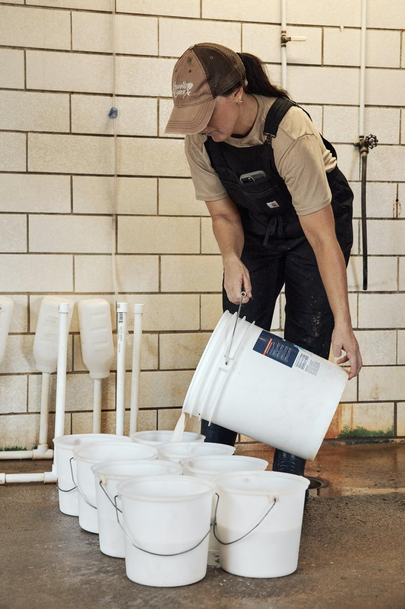
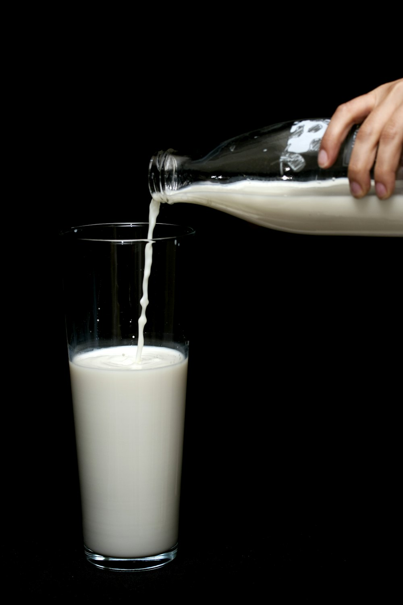
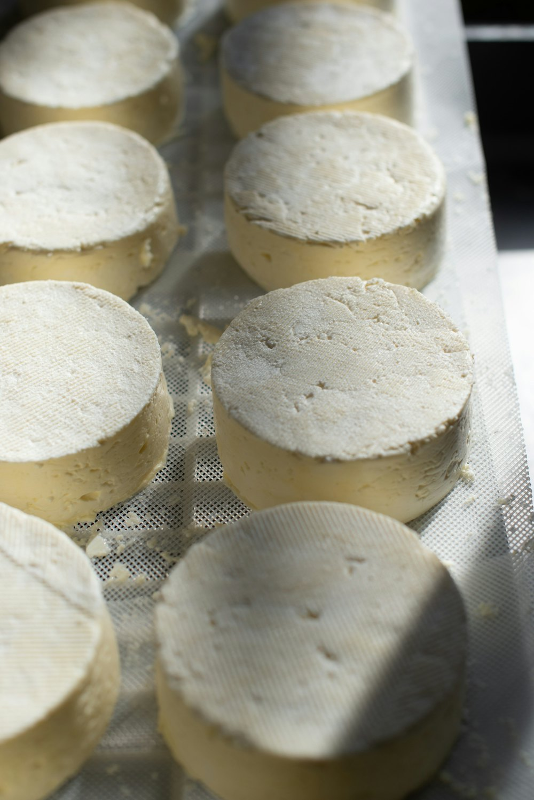
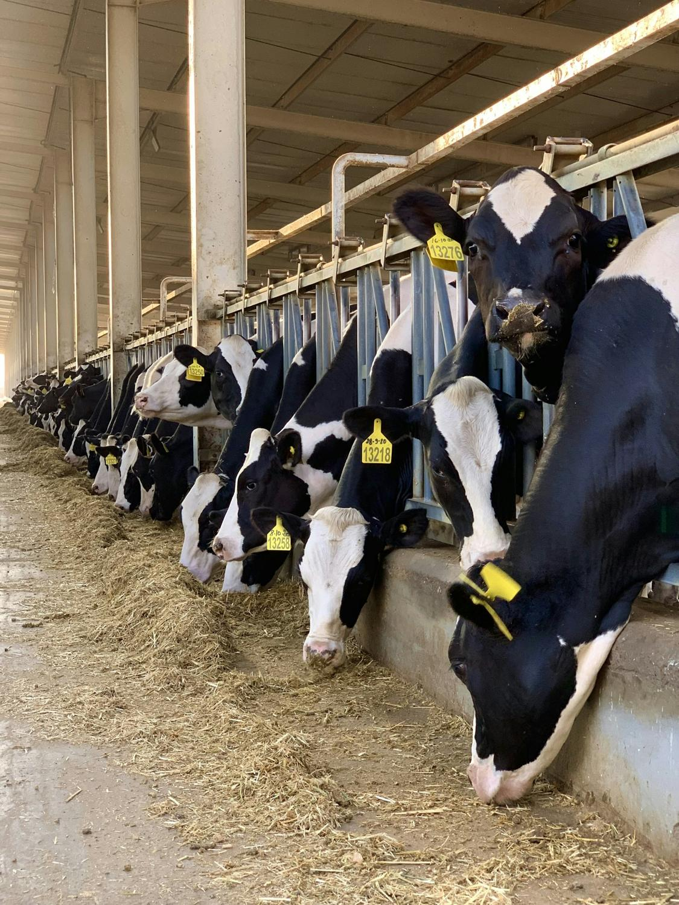
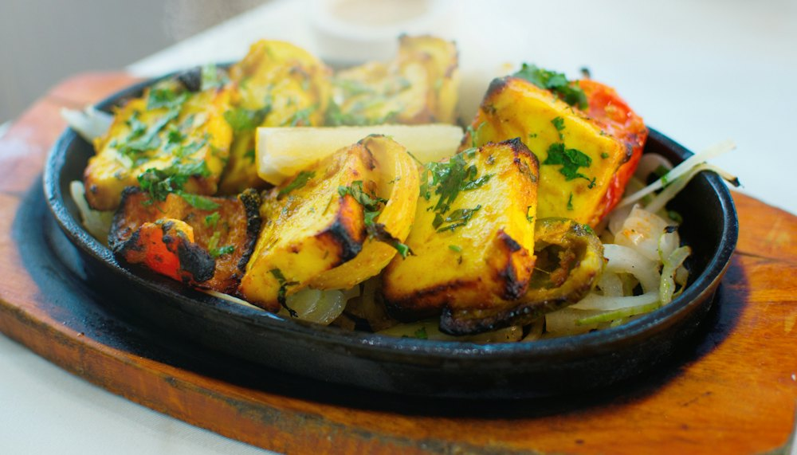
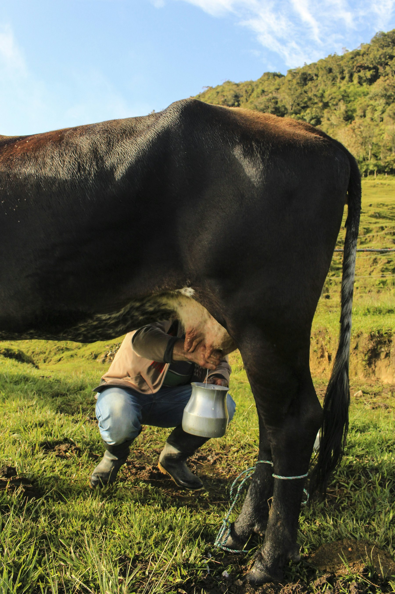

Direct from Farmers
We work directly with local dairy farmers, cutting out every middleman. The milk that becomes your paneer is collected fresh, every single day.
Milk collected directly from our farmers. Paneer made the natural way — no preservatives, no shortcuts. Delivered fresh to your kitchen.

We work directly with local dairy farmers, cutting out every middleman. The milk that becomes your paneer is collected fresh, every single day.

Our paneer contains nothing but pure milk. No chemicals, no additives, no shelf-life tricks. What you taste is exactly what nature intended.

Traditional methods, unhurried process. We let the milk do what it does best — and the result is paneer with a texture and flavour that mass production simply cannot replicate.

Every batch of Farm Og paneer passes two independent tests before it reaches you. Not because we have to — because we believe you deserve to know exactly what you are eating.
The moment milk arrives at our facility, it undergoes a Gas Chromatography (GC) test. Only milk that passes — with zero adulteration detected — is accepted for production. Milk that fails is rejected outright, no exceptions.
After production, every individual batch of paneer is lab-tested before it leaves our facility. Each batch carries its own test record, so the quality of what you receive is documented and traceable.
Two tests. Every time. No shortcuts.

Crafted from full-fat, farm-fresh milk collected daily from our partner farmers. Soft, rich, and naturally flavourful — ideal for restaurants and home chefs who refuse to compromise on quality.
Every block of Farm Og paneer begins at sunrise — with a farmer, a cow, and a commitment to doing things right.— The Farm Og Promise
We partner with local dairy farmers who share our belief in doing things right. Their cows graze freely, their milk is collected with care, and their livelihoods are supported by every order you place.

Whether you run a restaurant or cook for your family, Farm Og delivers the quality your kitchen deserves. Get in touch to place your first order.
Get in Touch